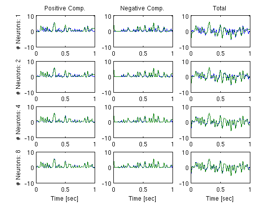
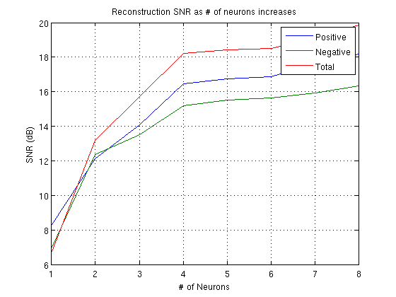
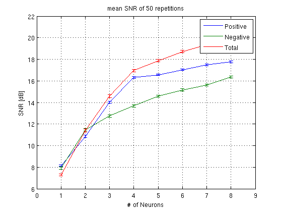

Time Encoding and Decoding of Stimulus Velocity with an ensemble of LIF neurons
Performs the example presented in section 4.3.2 in [1]. The velocity signal is represented by a bandlimited function. The signal is decomposed into its positive and negative parts u_+, u_- Each of the two parts is encoded by a population of LIF neurons with random thesholds and then recovered in the Sobolev space S1. The script produces Figures, similar to Figs. 7 & 8.
[1] Aurel A. Lazar and Eftychios A. Pnevmatikakis, Reconstruction of Sensory Stimuli Encoded with Integrate-and-Fire Neurons with Random Thresholds, EURASIP Journal on Advances in Signal Processing, Volume 2009, 2009, Special Issue on Statistical Signal Processing in Neuroscience, doi:10.1155/2009/682930
Contents
Generate a Test Signal
Generate a signal 1 second long sampled at 0.25 MHz with a bandwidth of 30 Hz, and decompose into positive and negtive components
dt = 4e-6; fmax = 30; t = 0:dt:1; t_v = round(0.05*length(t)):round(0.95*length(t)); % truncated vector mc = floor(floor(1/dt)*fmax*dt); % maximum sinusoidal components u = gen_test_signal(t(end)+2*round(0.1*length(t))*dt,dt,fmax,-Inf,mc); u = u((round(0.1*length(t))+1):end-round(0.1*length(t)+1)+1); % truncate first 100 values to eliminate discontinuities u_pos = max(u,0); u_neg = max(-u,0);
Time Encoding
Set parameters for neurons
N = 8;
b_pos = 0.1 + 0.2*rand(1,N);
b_neg = 0.1 + 0.2*rand(1,N);
delta_pos = 1.4 + rand(1,N);
delta_neg = 1.4 + rand(1,N);
n_pos = delta_pos/20;
n_neg = delta_neg/20;
C_pos = 0.01*ones(1,N);
C_neg = 0.01*ones(1,N);
R_pos = 30 + 20*rand(1,N);
R_neg = 30 + 20*rand(1,N);
tnr = 20; % threshold to noise ratio
n_pos = delta_pos./tnr;
n_neg = delta_neg./tnr;
snr_in = 10*log10(tnr);
Encode positive and negtive components of stimulus velocity with population of LIF neurons with random threshold
tk_p = cell(1,N); tk_n = cell(1,N); for i = 1:N tk_p{i} = iaf_encode(u_pos, dt, b_pos(i), delta_pos(i), n_pos(i), R_pos(i), C_pos(i)); tk_n{i} = iaf_encode(u_neg, dt, b_neg(i), delta_neg(i), n_neg(i), R_neg(i), C_neg(i)); end
Time Decoding
Perform time decoding in S1 space. Progressively increase the number of neurons used in the reconstruction.
lamda = 1e-4; up_rec = zeros(N,length(t)); un_rec = zeros(N,length(t)); u_rec = zeros(N,length(t)); for i = 1:N up_rec(i,:) = LIF_pop_decode_S1(tk_p(1:i), t(end), dt, b_pos, delta_pos, R_pos, C_pos, n_pos, lamda, i); un_rec(i,:) = LIF_pop_decode_S1(tk_n(1:i), t(end), dt, b_neg, delta_neg, R_neg, C_neg, n_neg, lamda, i); u_rec(i,:) = up_rec(i,:) - un_rec(i,:); snr_p(i) = 10*log10(sum(u_pos(t_v).^2)/sum((u_pos(t_v)-up_rec(i,t_v)).^2)); snr_n(i) = 10*log10(sum(u_neg(t_v).^2)/sum((u_neg(t_v)-un_rec(i,t_v)).^2)); snr_t(i) = 10*log10(sum(u(t_v).^2)/sum((u(t_v)-u_rec(i,t_v)).^2)); end
Visualize reconstruction results
figure;
subplot(4,3,1);plot(t,u_pos,t,up_rec(1,:)); ylabel('# Neurons: 1'); title('Positive Comp.')
subplot(4,3,2);plot(t,u_neg,t,un_rec(1,:)); title('Negative Comp.')
subplot(4,3,3);plot(t,u,t,u_rec(1,:)); title('Total');
subplot(4,3,4);plot(t,u_pos,t,up_rec(2,:)); ylabel('# Neurons: 2')
subplot(4,3,5);plot(t,u_neg,t,un_rec(2,:));
subplot(4,3,6);plot(t,u,t,u_rec(2,:));
subplot(4,3,7);plot(t,u_pos,t,up_rec(4,:)); ylabel('# Neurons: 4')
subplot(4,3,8);plot(t,u_neg,t,un_rec(4,:));
subplot(4,3,9);plot(t,u,t,u_rec(4,:));
subplot(4,3,10);plot(t,u_pos,t,up_rec(8,:));xlabel('Time [sec]'); ylabel('# Neurons: 8')
subplot(4,3,11);plot(t,u_neg,t,un_rec(8,:));xlabel('Time [sec]');
subplot(4,3,12);plot(t,u,t,u_rec(8,:));xlabel('Time [sec]');
figure;plot(1:N,snr_p,1:N,snr_n,1:N,snr_t); grid on; xlabel('# of Neurons'); ylabel('SNR (dB)');
legend('Positive','Negative','Total'); title('Reconstruction SNR as # of neurons increases');
  Monte Carlo Repetitions
Repeat the above encoding and decoding for 50 times
Nrep = 50; for rep = 1:Nrep tk_p = cell(1,N); tk_n = cell(1,N); for i = 1:N tk_p{i} = iaf_encode(u_pos, dt, b_pos(i), delta_pos(i), n_pos(i), R_pos(i), C_pos(i)); tk_n{i} = iaf_encode(u_neg, dt, b_neg(i), delta_neg(i), n_neg(i), R_neg(i), C_neg(i)); end up_rec = zeros(N,length(t)); un_rec = zeros(N,length(t)); u_rec = zeros(N,length(t)); for i = 1:N up_rec(i,:) = LIF_pop_decode_S1(tk_p(1:i), t(end), dt, b_pos, delta_pos, R_pos, C_pos, n_pos, lamda, i); un_rec(i,:) = LIF_pop_decode_S1(tk_n(1:i), t(end), dt, b_neg, delta_neg, R_neg, C_neg, n_neg, lamda, i); u_rec(i,:) = up_rec(i,:) - un_rec(i,:); snr_p(i,rep) = 10*log10(sum(u_pos(t_v).^2)/sum((u_pos(t_v)-up_rec(i,t_v)).^2)); snr_n(i,rep) = 10*log10(sum(u_neg(t_v).^2)/sum((u_neg(t_v)-un_rec(i,t_v)).^2)); snr_t(i,rep) = 10*log10(sum(u(t_v).^2)/sum((u(t_v)-u_rec(i,t_v)).^2)); end end
Showing average reconstruction SNR
figure;errorbar(1:N,mean(snr_p'),std(snr_p')/sqrt(Nrep)); hold all; errorbar(1:N,mean(snr_n'),std(snr_n')/sqrt(Nrep)); hold all; errorbar(1:N,mean(snr_t'),std(snr_t')/sqrt(Nrep)); hold all; legend('Positive','Negative','Total'); grid on; xlabel('# of Neurons'); ylabel('SNR [dB]'); title('mean SNR of 50 repetitions')
Author: Eftychios A. Pnevmatikakis
Copyright 2009-2011 Eftychios A. Pnevmatikakis